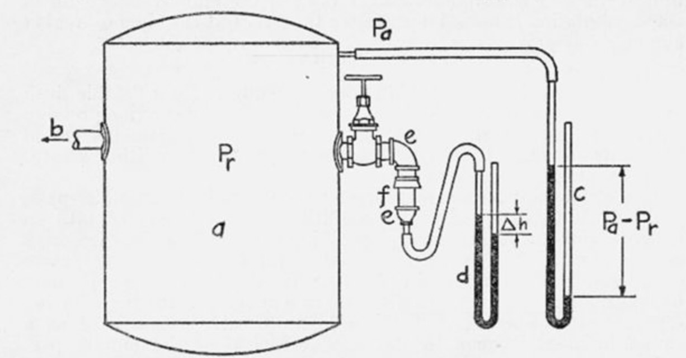

People with professional training in imagination lead on this page. We record their requests for reality---their ideas about where we could be next. We then collect stories and art expanding on those ideas, exploring how the world might look if we go there. Finally, we keep an index of the real world organizations working in that direction. Technology is made by people, and people follow art.
Together, we aim to satisfy user requests for our shared reality.
All images are taken from National Institute of Standards and Technology Digital Collections, Gaithersburg, MD 2089
Helpful Robots for Local Government
Leeman Kessler ['Mayor Lovecraft']:
As a decades-long player of various city simulators such as SimCity, City Skylines, Caesar, Banished, Tropico, etc it may not come as such a surprise that I found myself in municipal politics. Now while real municipal governance does not resemble the power fantasy embedded in those games (which is probably a good thing) one area that holds a great deal of wish-fulfilment is real-time, accurate, universal information particularly related to infrastructure and the ability to immediately resolve an issue. In SimCity you can see where the water and electricity is flowing and know right away when there's a problem. You click a button and it tells you where pollution and crime is at its worst. In the real world, you are dependent on imperfect monitoring and guesswork and the gap between what you know and what you don't can cause a lot of problems.
One of the main duties I have as mayor is to make sure that everyone in the village has safe, clean, accessible, and affordable water. As a small village, we purchase our water from the neighboring county seat and are charged for every gallon that passes through their monitors. We then sell it on to our residents, schools, and businesses and watch as much of it re-enters our wastewater system to be processed. For decades we've dealt with what is referred to as unaccounted-for or unbilled water. Essentially we can tell that we're buying more water than we're selling. Now sometimes we can tell where that water has gone such as to our own buildings or if we're doing projects such as hydrant flushing but the vast majority of that discrepancy cannot be accounted for. Our physical pipes are old and we are a tree city so we know that a great deal is physically leaking into the ground but there's also how we monitor and bill which often time is based on estimations rather than raw data and there can be errors so water is digitally disappearing. We've used and considered using many services such as sonic leak detectors, smart meters, and even chlorine-sniffing dogs but the discrepancy persists. We cannot simply click a button to see wavy blue lines and find out where the problem is.
As an exercise in wishlisting, if we could have technology that could pinpoint where water is present in our infrastructure and how it leaves in real-time that would go a long way towards helping us save taxpayer dollars and staff hours. We also spend a lot of time testing the safety of the water so being able to tell right away where chlorine levels are and if there are any dangerous pollutants such as lead, PFAs and the like would benefit our community. Similarly, if our wastewater system could have continuous monitoring to let us know when there were potential blockages or issues, we'd save ourselves costly repairs and clean ups. Permeability and drainage are huge considerations when it comes to flooding and being able to see how construction or infrastructure projects would impact both with consistent predictability would provide great value. Continuous monitoring of roads and sidewalks would allow us to see where wear and tear are most present and repairs needed. Real time or time-lapsed heat maps could show us where residents and villagers move and where pedestrian or motorist safety infrastructure could be improved or changed. Going further, communities like mine could be immeasurably served with something like the Exocomps from the 1992 episode of Star Trek The Next Generation "The Quality of Life" that can fit into the pipes and drains and provide near immediate response to many of these infrastructure issues without costly and dangerous digging and tearing up.
Now there are a number of safety, ethical, and environmental concerns that would also have to be met before my local government would move forward with this technology. Accuracy would be paramount if we're entrusting it with something like community water safety. There'd be no room for hallucinations. We'd want assurances of ethical sourcing, particularly around training data. Resident privacy would need to be maintained, particularly with any sort of continuous surveillance. The environmental and energy needs would need to be mitigated so that we're not contributing to further degradation of health and well-being. We'd need to fold any technology into our existing maintenance schedules and staffing needs. Finally we'd want to make sure that village information isn't being sold on to third parties and have serious conversations about how data gleaned from our community was used more largely.
I hope this is a helpful guide to one village's concerns and how technology could be imagined to improve things. How much AI or similar technology can play a part, I do not know and as our conversation today shows, I remain skeptical of the long-term impacts of this technology particularly in its current trajectory but I hope that gives you a useful sense of where we currently are and where needs of other communities might be.
-Leeman

Creative Exploration [Fiction: Expanding on the idea in the request]
- [ ]
- [ ]
Technical Exploration [Non-fiction: Who's pursuing this goal in the real world]
- MLCommons [Places] is keeping rankings for energy efficiency in new AI models
- Future of Privacy Forum [Places] offers easy readers on privacy protections in AI and analytics
- Democratizing AI and Curious Robot Children [Stories] are new research directions that could allow us to develop small locally-trained AI
Image Credit: "Cross-connections in plumbing systems"